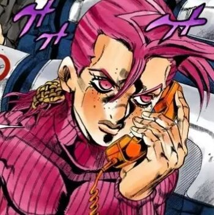

|  |
Vinegar Doppio
SPOILER WARNING:Part 5 Spoiler details may follow.
You are the only one I can trust. Understand? You are my greatest.
Diavolo to Doppio,Chapter 553
|
Appearance
Fairly, slimfit young man. He has freckles, contributing to his boyish looks. His hair is tied into a neck-lenght ponytail by a weave-like braid;
the front hair is left loose and sweeps over to one side lock, the position and lenght of which is portrayed inconsistently.
His clothing consists of a light-colored sweater with gash-like openings on it that leave the midriff exposed and loose pair of jeans with studs covering the thighs and side of ankles.
Doppio also wears a black mesh shirt underneath the sweater.
Personality
Roger that, boss.That is my reason for living as well
-Vinegar Doppio, Chapter 553
Doppio is frendly, honest, and a bit cowardly. He regularly hallucinates random objects as "phones" with which he talks with his alter-ego, not knowing that they share the same body.
Doppio mostly behaves like a good-natured person and is by default a friendly and polite indiviual. Doppio frequently seems good with childrend as he once succesfully borrowed a toy
phone from a child while taking a plane and even risked his life to save another one. Whenever attacked, Doppio automatically reverts to a state of true fear and submission,
often choosing the safest option such a comply with his agressor's demands. He believes himself to be unlycky, which provides an ironic contrast to Diavolo's good fortune.

Doppio being victimized
Fierecly loyal to his boss to a point of attempting to fulfill the mission first and foremost, Doppio is somewhat resourceful although Diavolo has to help and counsel him from time to time.
Despite this, though, bits of Diavolo are in Doppio: during the battle with Risotto Nero, Doppio refused to leave the battle or have his boss step in,
remaining and doing all he could to find a weakness in Risotto's stand, Metallica. He shares his alter ego's collected nature when in battle, and while his first actions are usually
panicing and screaming, he soon and very quickly calms down, carefully using his tools to identify the enemy and his powers.
As Diavolo is gently and patient with Doppio, he is usually completly unquestioning, agreeing to wahtever his "boss" says. As he dies, Doppio's last thoughts are of his boss, remaining
faithful until the end and smiling, saying that if Diavolo is going with them he'll surely wins and asks Diavolo to call him, remarking thats he feels lonely.
However, Doppio is also subjected to angry mood swings, and swears heavily during these fits, though unlike Diavolo he is less controlled and focused with it, being bipolar.
Snappy, Doppio flat-out disobeyed and argued with his direct superior during the battle with Risotto[5] and even rebuked him once more for "calling" him in Bucciarati's presence
He also has a low tolerance and almost zero patience for "idiots" and people who withhold "phones" from him.
Doppio has been shown questioning fortune telling, as he stated that some of the guesses the fortune teller made were simply that due to his appearance ("You're a tourist,"
because of his bag, "You have a secret," because everybody does, etc.).

Doppio calling his "Boss" with a cigarette
Even with the bridge of personality to personality, however, he is entirely unaware of their co-inhabitance and considers himself Diavolo's underboss, not knowing that they share the same body.
Diavolo was shown moving Doppio out of the alley shortly after killing the fortune teller so he didn't see the corpse, but also possibly to withholding his actions from Doppio entirely.
Doppio seems to be largely unaware of what the objects he hallucinates as calls "phones" really are that Diavolo converses with, being an ice cream cone, a burned cigarette or even a frog.
He seems to have a very poor memory to top it off, but whether it's due to Diavolo's influence over Doppio is unknown. Before encountering Risotto, Diavolo warned Doppio that
he assassin was in the area and gave him strict instructions on how to deal with him and how to complete the mission. However, upon "hanging up", t didn't take more than a brief moment
for Doppio to immediately forget his mission, what he was just ordered, the fact that Risotto was in the area, and above all, how he managed to talk to the boss despite his phone being broken.
He's also shown to get a headache each time Diavolo is taking control over him or after they stopped talking to each other through the "phone".
Relationships

Doppio's status in the Passione hierarchy: the Consigliere
- Diavolo: While Doppio never learned the truth between themselves, he highly respects Diavolo and always called him "Boss" - though, whether
or not Doppio knew Diavolo's name is unknown. Doppio also seems to be Diavolo's gopher, something he takes pride in considering how loyal he was to a point of stubbornness, and he seemed heed
most of Diavolo's orders when he remembered them.
- Risotto Nero: Both of these characters have a mutual dislike for each other. Risotto dislikes Doppio simply because he is connected to "the boss" and vice versa
because Risotto is looking for the boss. As Risotto continues to try to kill Doppio this dislike grows to the point that Doppio is willing to risk his own life for a chance to kill Risotto.
Abilities
Main article: King Crimson
Doppio is capable of using Epitaph, a sub-ability of King Crimson, as well as King Crimson's arms; Doppio assumes he is borrowing them from Diavolo. They allow him to see ten seconds into the future
and perform powerful strikes. He is also able to communicate with Diavolo by hallucinating phones out of random objects.

Doppio turning into Diavolo
References
- https://twitter.com/syukuhukusiro/status/1194590115537899522
- Chapter 544:
- Chapter 553:
- Chapter 541:
- Chapter 547:
- Chapter 577:
- Chapter 568:
- Chapter 541:
- Chapter 542:
- Chapter 544:
- Chapter 543:
Work expirience
| Dates |
Work |
| 2010-2013 |
Lead developer at Tempo App |
| 2010 |
Researcher at The Institute of Cognitive Neurosciences |
Skills
| IOS Development |
💪💪💪💪💪 |
| Phyton Development |
🦵🦵🦵🦵🦵 |
| Photography |
🦶🦶🦶🦶🦶 |
| Cocksucking |
🤏🤏🤏🤏🤏 |